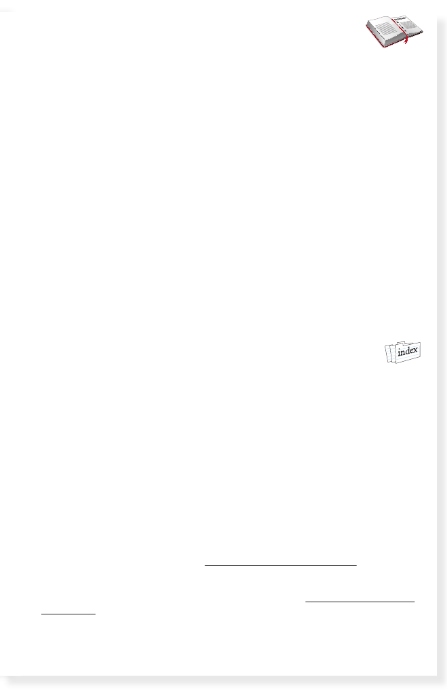

GLOSSARY
amusement park
– an outdoor place with fun rides
border
– to be on the edge of a piece of land
farmland
– a place where food can be grown
governor
– the leader of a state
international
– between one country and another
official
– important or special to a state or country
resident
– someone who lives in a place
symbol
– an object that stands for something else
INDEX
B
beaches 7–20
G
gold 8–20
N
natural resources 17–20
C
crops 10–20
L
libraries 19–20
P
presidents 18–20
REFERENCES
California State Library (state symbols): library.ca.gov/history/symbols.html
McNeer, M.
The California Gold Rush.
National Archives (visit presidential libraries and museums): archives.gov/presidential-
libraries/visit
Pelta, K. California
(Hello U.S.A.).
29